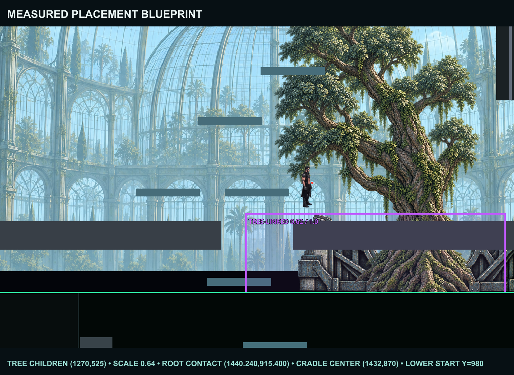
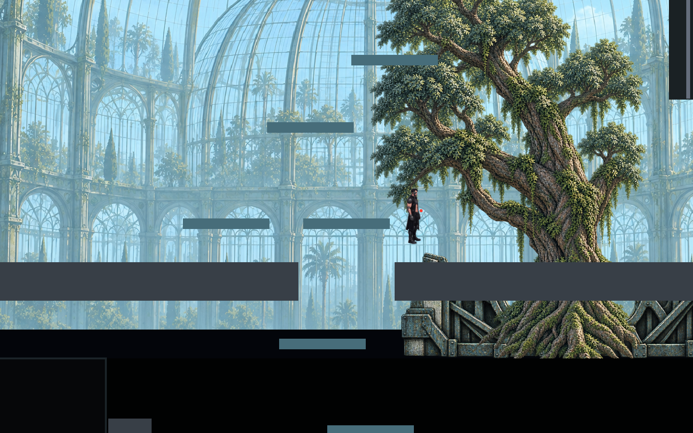
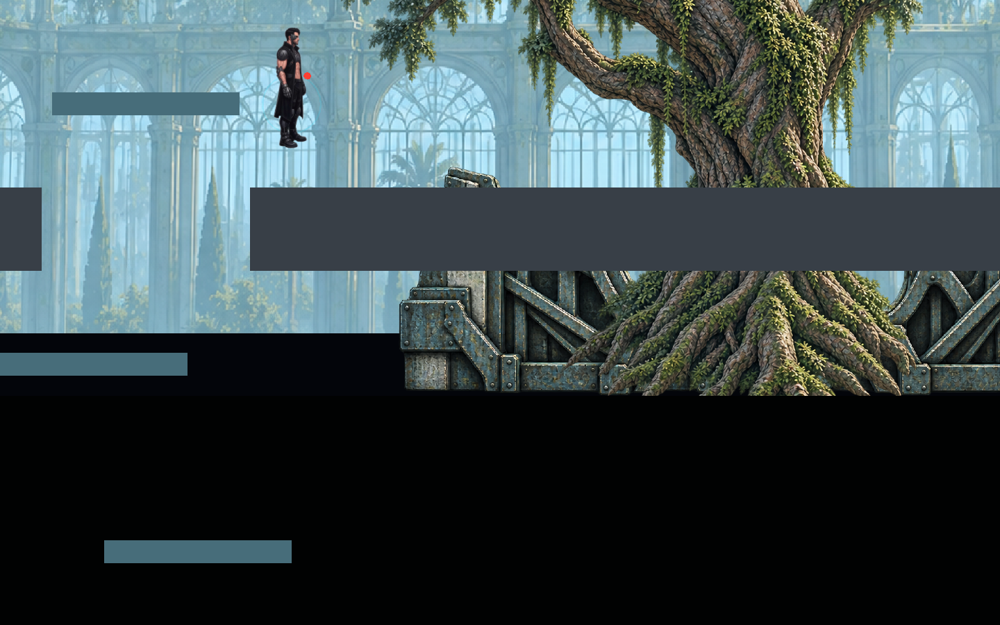
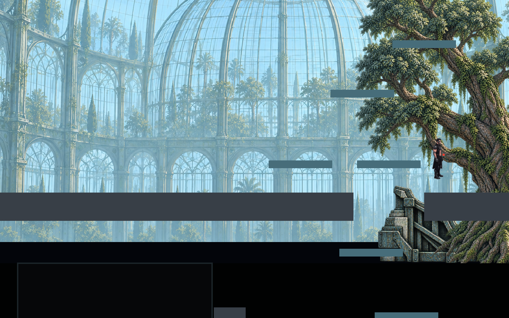
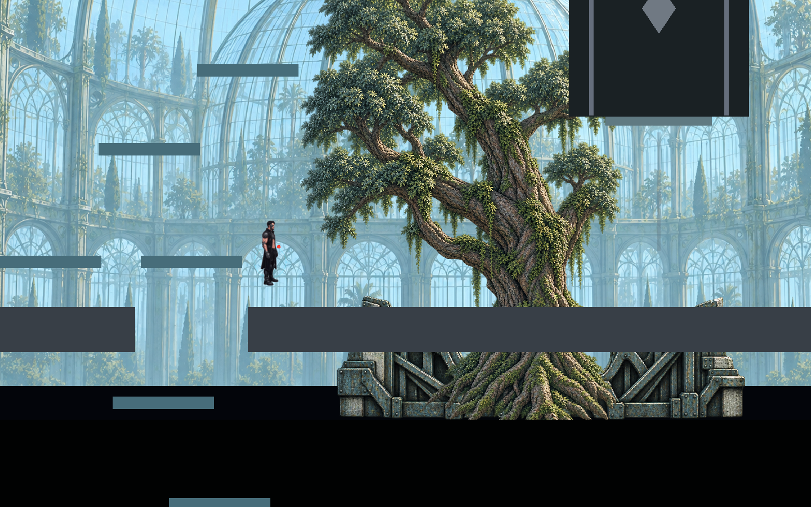
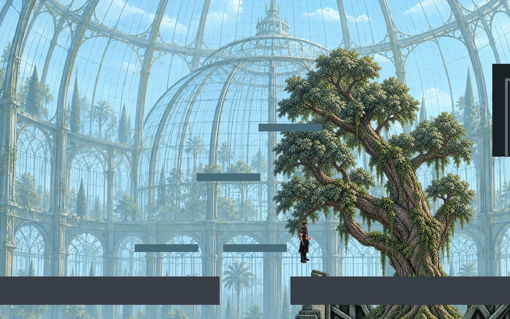
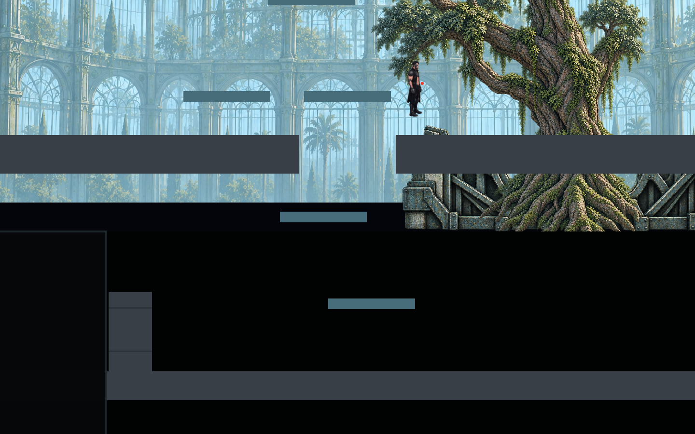
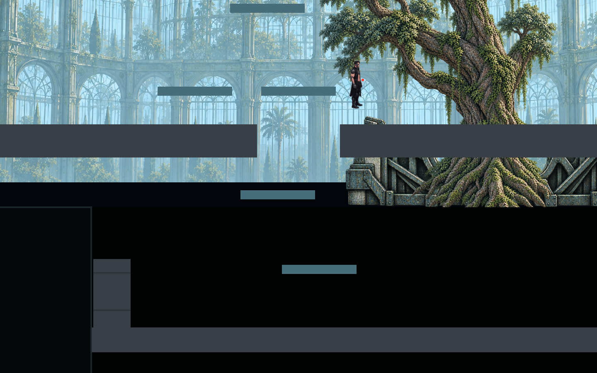
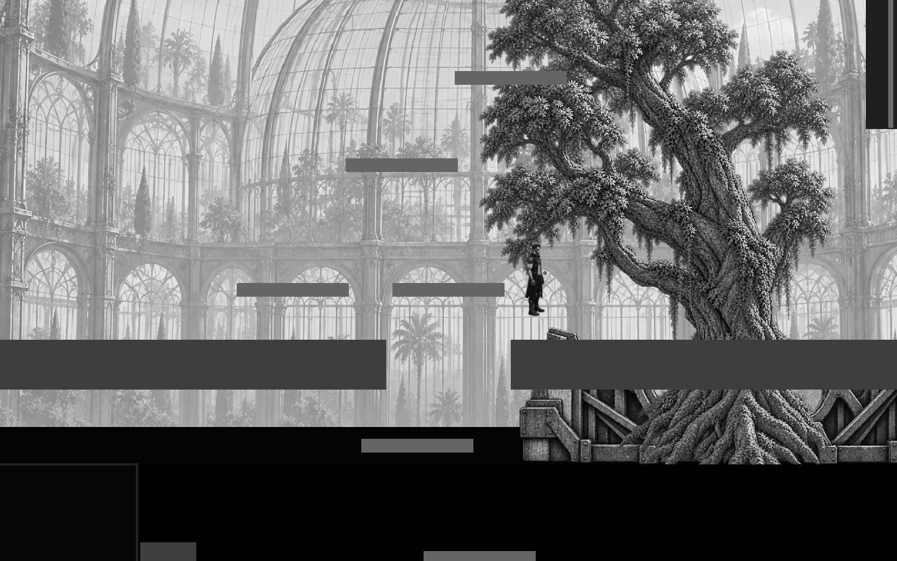
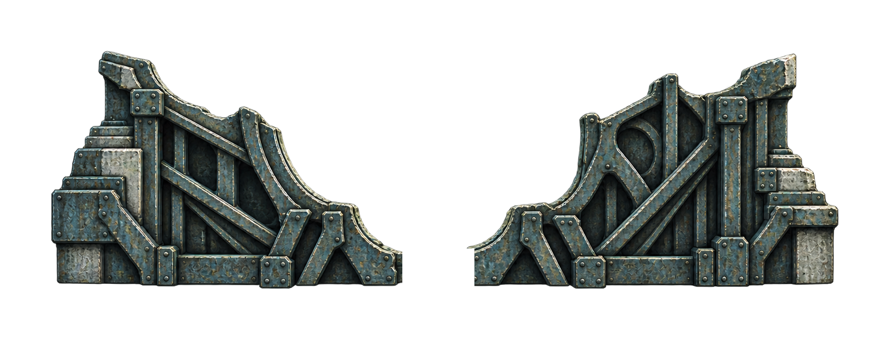

Мобильный review-лист
Полный результат: старое/новое положение, центр, корни, крайние положения камеры и Lower boundary.

Камера и parallax после Main Transition
Измеренный placement blueprint

До / после Main Transition

Центральная камера


Корни + конструкция


Левый предел


Правый предел


Самая высокая камера


Самая низкая камера


Граница Lower Y 980


Grayscale / value


Принятый structural cradle asset
